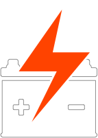
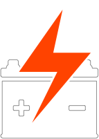
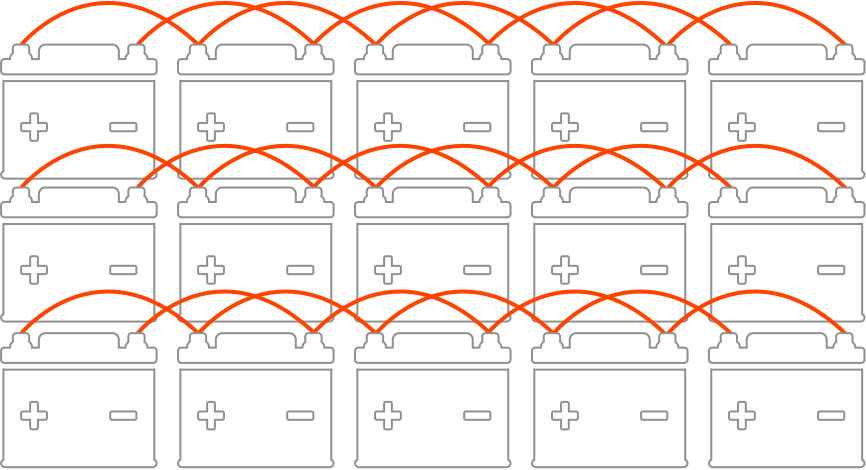
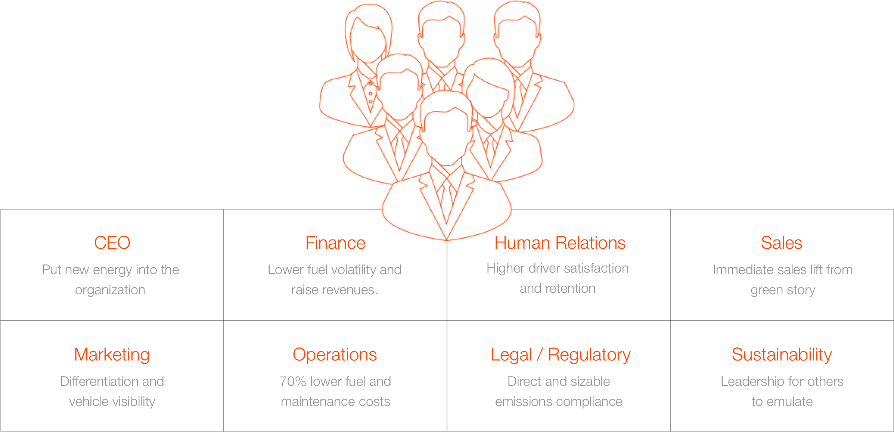

Change The Energy
Together we will reenergize the world as we electrify commercial transportation.
New Age Thinking.
The Information Age made knowledge available to all. Now, a new era is underway. Technology advances of the Energy Age will empower freedoms and energize economies everywhere. The ignition point is transportation electrification.
Nohm’s focus is large, urban commercial vehicles. This is because, per vehicle, electric trucks carry far more change impact than cars.

Trucks, Not Cars
Nohm’s next big focus is trucks. Per vehicle, electric trucks produce the biggest savings and emissions impact of all.
 

Batteries Are Key
Our standard EV battery is the size of a small refrigerator. When time to remove them from the trucks (8-10 years) the batteries still hold 70-80% energy capacity. Grouped, these batteries take on a whole new life creating much needed energy storage for solar and wind energy.
The byproduct of diesel vehicles is greenhouse gas.
The byproduct of electric trucks is large scale energy storage. Talk about a powerful solution!

The Avenue to Positive Impact
It’s simple. With lower costs and market demand for zero emissions, medium duty electric vehicles (MDEVs) add clear and immediate value at every touch point. In turn, contribution energy elevates organization-wide as people are enabled to make a major difference.

Easy Button Impact
Electrification can be intimidating. Not because it’s hard, because it’s new. Think of a Nohm EV as a big, rolling business appliance. All that’s needed is an outlet to plug it in. Nohm delivers the charging units with the vehicles and works locally to make EV fueling and profound impact as easy as flipping a switch.
Electrification can be intimidating. Not because it’s hard, because it’s new. Think of a Nohm EV as a big, rolling business appliance. All that’s needed is an outlet to plug it in. Nohm delivers the charging units with the vehicles and works locally to make EV fueling and profound impact as easy as flipping a switch.